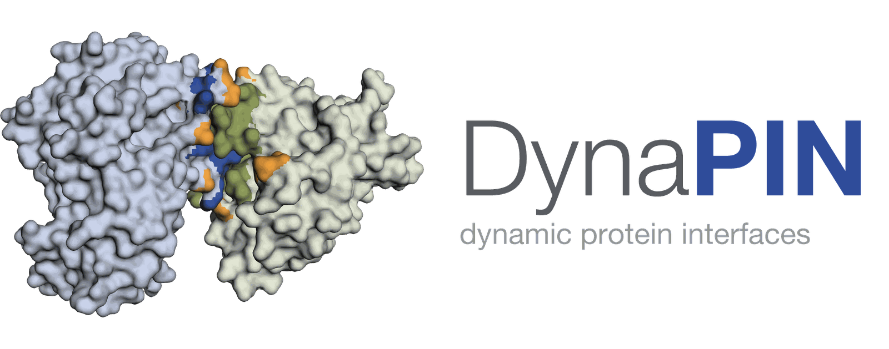
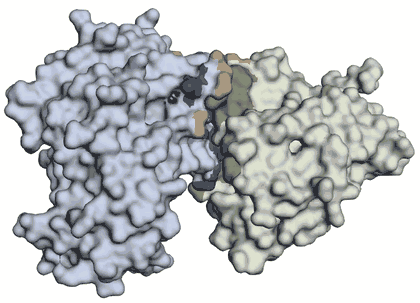

An interface is not a fixed list of contacts. DynaPIN measures what it actually does over a trajectory.
Give it an MD trajectory or a structure ensemble and it returns a dynamic interface fingerprint: how stable the simulation is, how each residue's exposure, energy and secondary structure evolve, and which non-covalent interactions persist, appear or disappear — as tables and figures, from one command.

Three modules, run together or on their own
-
Quality control
Is the simulation worth analysing?
- RMSD, radius of gyration, RMSF
- CAPRI interface metrics per frame: iRMSD, lRMSD, DockQ, Fnat, Fnonnat
-
Residue based
How each interface residue changes.
- Core, rim, support, surface or interior, by Levy's definition
- SASA and relative SASA, complex and monomers
- Van der Waals and electrostatic contributions per residue, via FoldX
- Secondary structure transitions
-
Interaction based
The network, frame by frame.
- Hydrogen bonds, hydrophobic contacts and salt bridges
- Each interaction's persistence across the trajectory
- Pairwise interaction frequency plots
FoldX is optional and must be obtained separately, as its licence is academic.
Without --foldx_path everything else still runs; only the energy module is
skipped.
One conda environment
Linux or macOS, Python 3.10 or newer. On Windows, use WSL. The environment
brings in the C extensions that interfacea needs, so conda is not optional.
git clone https://github.com/CSB-KaracaLab/DynaPIN.git
cd DynaPINconda env create -f environment.yml
conda activate dynapinFrom the command line, or as a library
A single command runs quality control, the residue analysis and the interaction analysis, and draws every plot.
dynapin --output_dir=TestRun --trajectory_file=sim.pdb --commands=all_analysis,all_plotsdynapin --output_dir=TestRun --trajectory_file=sim.dcd --topology_file=top.psf \
--stride=10 --foldx_path=/path/to/foldx --commands=all_analysis,all_plots| Argument | What it does |
|---|---|
-t, --trajectory_file | The trajectory: .dcd, .xtc, .trr or .pdb. |
--topology_file | Needed for .dcd. It must carry chain identifiers. |
-c, --commands | QualityControl, ResidueBased, InteractionBased, all_analysis, all_plots. |
-s, --stride | Read every n-th frame. The quickest way to make a first pass cheap. |
-ch, --chains | Which two chains to treat as the interface in a heteromer, e.g. 'A,B'. |
--threshold | Percentage of frames a residue must be at the interface to count as a dynamic interface residue. Default 50. |
--foldx_path | The FoldX executable. Omit it and the energy module is skipped. |
For interactive work there is a notebook,
DynaPIN_API_workflow.ipynb,
which exposes the same analyses step by step with inline 3D views.
Tables you can plot yourself, and the plots already drawn
output_dir/
├── figures/ # qc_*, res_*, int_pairwise_* plots
├── tables/
│ ├── int_pairwise_trajectory.csv # every atomic interaction, per frame
│ ├── qc_residue_rmsf.csv # RMSF per residue
│ ├── qc_trajectory_metrics.csv # RMSD, Rg, DockQ over time
│ ├── res_interface_stats.csv # interface occupancy, core/rim classification
│ └── res_trajectory_props.csv # energy, SASA and secondary structure per residue
├── models.zip # the frames that were analysed
└── plot_params.json, table_params.jsonThe trajectories and the full outputs for the three test cases in the paper — rigid, medium and difficult — are on Zenodo, so you can reproduce a run before pointing DynaPIN at your own data.
If DynaPIN is in your methods section
Barlas AB, Özsan A, Prévost C, Sacquin-Mora S, Karaca E (2026)
DynaPIN: A Tool for Characterizing Dynamic Protein Interfaces
Journal of Molecular Biology 438:169942 · doi:10.1016/j.jmb.2026.169942
DynaPIN is a pipeline over other people's work. If you use the module, please cite the tool underneath it:
- MDAnalysis — trajectory handling and the structural metrics · 10.1002/jcc.21787
- pdb-tools — preprocessing · 10.12688/f1000research.17456.1
- DockQ — the CAPRI quality metrics · 10.1371/journal.pone.0161879
- FreeSASA and Levy's definition — accessible surface and interface regions · 10.12688/f1000research.7931.1 · 10.1016/j.jmb.2010.09.028
- DSSP — secondary structure · 10.1002/pro.70208
- FoldX — the energy decomposition · 10.1093/nar/gki387
- interfacea — the non-covalent interaction profiling · 10.5281/zenodo.3516439